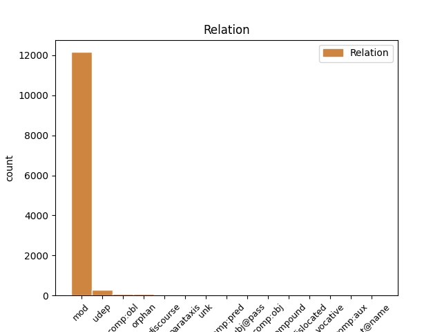
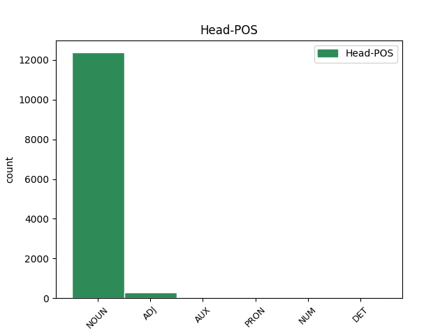
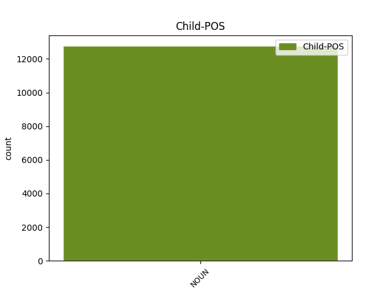

Distribution of features within this leaf



Agreement Rules sorted by frequency.
- When the dependent token is the modifer(mod) of the head token, and the head token is NOUN and the dependent token is NOUN.
1 No _ _ _ _ 0 _ _ _
2 arheoloģiskiem _ _ _ _ 0 _ _ _
3 izrakumiem _ _ _ _ 0 _ _ _
4 gan _ _ _ _ 0 _ _ _
5 redzams _ _ _ _ 0 _ _ _
6 , _ _ _ _ 0 _ _ _
7 ka _ _ _ _ 0 _ _ _
8 liela _ _ _ _ 0 _ _ _
9 dzimstība _ _ _ _ 0 _ _ _
10 neapstiprinās _ _ _ _ 0 _ _ _
11 ( _ _ _ _ 0 _ _ _
12 spriežot _ _ _ _ 0 _ _ _
13 pēc _ _ _ _ 0 _ _ _
14 māju _ _ _ _ 0 _ _ _
15 lieluma _ _ _ _ 0 _ _ _
16 ) _ _ _ _ 0 _ _ _
17 , _ _ _ _ 0 _ _ _
18 jo _ _ _ _ 0 _ _ _
19 liels _ _ _ _ 0 _ _ _
20 iedzīvotāju iedzīvotājs NOUN ncmpg1 Case=Gen|Gender=Masc|Number=Plur 21 mod _ LvtbNodeId=a-z99-p67s5w20
21 skaita skaits NOUN ncmsg1 Case=Gen|Gender=Masc|Number=Sing 0 _ _ _
22 pieaugums _ _ _ _ 0 _ _ _
23 līdzinātos _ _ _ _ 0 _ _ _
24 Āzijas _ _ _ _ 0 _ _ _
25 dzimstības _ _ _ _ 0 _ _ _
26 sprādzienam _ _ _ _ 0 _ _ _
27 . _ _ _ _ 0 _ _ _
1 Pēdējās _ _ _ _ 0 _ _ _
2 desmitgadēs _ _ _ _ 0 _ _ _
3 daudzās _ _ _ _ 0 _ _ _
4 attīstītajās _ _ _ _ 0 _ _ _
5 valstīs _ _ _ _ 0 _ _ _
6 novērojams _ _ _ _ 0 _ _ _
7 vispārējs _ _ _ _ 0 _ _ _
8 uzticēšanās _ _ _ _ 0 _ _ _
9 sarukums _ _ _ _ 0 _ _ _
10 , _ _ _ _ 0 _ _ _
11 kurš _ _ _ _ 0 _ _ _
12 tiek _ _ _ _ 0 _ _ _
13 saistīts _ _ _ _ 0 _ _ _
14 ar _ _ _ _ 0 _ _ _
15 modernajai _ _ _ _ 0 _ _ _
16 sabiedrībai sabiedrība NOUN ncfsd4 Case=Dat|Gender=Fem|Number=Sing 17 udep _ LvtbNodeId=a-z81-p57s1w16
17 raksturīgajām raksturīgs ADJ affpdyp Case=Dat|Definite=Def|Degree=Pos|Gender=Fem|Number=Plur 0 _ _ _
18 norisēm _ _ _ _ 0 _ _ _
19 . _ _ _ _ 0 _ _ _
1 Izrādei _ _ _ _ 0 _ _ _
2 ir _ _ _ _ 0 _ _ _
3 objektīva _ _ _ _ 0 _ _ _
4 nozīme _ _ _ _ 0 _ _ _
5 latviešu _ _ _ _ 0 _ _ _
6 teātra _ _ _ _ 0 _ _ _
7 estētiskās _ _ _ _ 0 _ _ _
8 pieredzes _ _ _ _ 0 _ _ _
9 bagātināšanā _ _ _ _ 0 _ _ _
10 – _ _ _ _ 0 _ _ _
11 A. _ _ _ _ 0 _ _ _
12 Hermanis _ _ _ _ 0 _ _ _
13 inovatīvi _ _ _ _ 0 _ _ _
14 izmanto _ _ _ _ 0 _ _ _
15 atmosfēru _ _ _ _ 0 _ _ _
16 , _ _ _ _ 0 _ _ _
17 ko _ _ _ _ 0 _ _ _
18 rada _ _ _ _ 0 _ _ _
19 ar _ _ _ _ 0 _ _ _
20 nereālistisku _ _ _ _ 0 _ _ _
21 gaismu gaisma NOUN ncfpg4 Case=Gen|Gender=Fem|Number=Plur 0 _ _ _
22 , _ _ _ _ 0 _ _ _
23 baznīcas _ _ _ _ 0 _ _ _
24 dziedājumu _ _ _ _ 0 _ _ _
25 , _ _ _ _ 0 _ _ _
26 intonāciju _ _ _ _ 0 _ _ _
27 un _ _ _ _ 0 _ _ _
28 kustību _ _ _ _ 0 _ _ _
29 ( _ _ _ _ 0 _ _ _
30 tai _ _ _ _ 0 _ _ _
31 skaitā _ _ _ _ 0 _ _ _
32 tiešu _ _ _ _ 0 _ _ _
33 un _ _ _ _ 0 _ _ _
34 stilizētu _ _ _ _ 0 _ _ _
35 kabuki _ _ _ _ 0 _ _ _
36 pozu poza NOUN ncfpg4 Case=Gen|Gender=Fem|Number=Plur 21 parataxis _ LvtbNodeId=a-z83-p140s2w36
37 un _ _ _ _ 0 _ _ _
38 kustību _ _ _ _ 0 _ _ _
39 ) _ _ _ _ 0 _ _ _
40 palīdzību _ _ _ _ 0 _ _ _
41 . _ _ _ _ 0 _ _ _
1 Diemžēl _ _ _ _ 0 _ _ _
2 , _ _ _ _ 0 _ _ _
3 netiek _ _ _ _ 0 _ _ _
4 dokumentēts _ _ _ _ 0 _ _ _
5 loga _ _ _ _ 0 _ _ _
6 veids _ _ _ _ 0 _ _ _
7 , _ _ _ _ 0 _ _ _
8 neatšifrējot _ _ _ _ 0 _ _ _
9 , _ _ _ _ 0 _ _ _
10 vai _ _ _ _ 0 _ _ _
11 tas _ _ _ _ 0 _ _ _
12 bijis būt AUX vcnpdmsnasnpn Aspect=Perf|Case=Nom|Definite=Ind|Degree=Pos|Gender=Masc|Number=Sing|Polarity=Pos|Tense=Past|VerbForm=Part|Voice=Act 0 _ _ _
13 vitrāžas _ _ _ _ 0 _ _ _
14 logs logs NOUN ncmsn1 Case=Nom|Gender=Masc|Number=Sing 12 comp:pred _ LvtbNodeId=a-z48-p28s11w14|SpaceAfter=No
15 . _ _ _ _ 0 _ _ _
1 Ja _ _ _ _ 0 _ _ _
2 šādas _ _ _ _ 0 _ _ _
3 atbilstošas _ _ _ _ 0 _ _ _
4 personas _ _ _ _ 0 _ _ _
5 ir _ _ _ _ 0 _ _ _
6 , _ _ _ _ 0 _ _ _
7 pieteikums _ _ _ _ 0 _ _ _
8 par _ _ _ _ 0 _ _ _
9 trešās _ _ _ _ 0 _ _ _
10 valsts valsts NOUN ncfsg6 Case=Gen|Gender=Fem|Number=Sing 11 mod _ LvtbNodeId=a-z102-p98s12w10
11 valstspiederīgā valstspiederīgs ADJ armsgyp Case=Gen|Definite=Def|Degree=Pos|Gender=Masc|Number=Sing 0 _ _ _
12 izmantošanu _ _ _ _ 0 _ _ _
13 tiek _ _ _ _ 0 _ _ _
14 noraidīts _ _ _ _ 0 _ _ _
15 . _ _ _ _ 0 _ _ _
1 Tas _ _ _ _ 0 _ _ _
2 ir _ _ _ _ 0 _ _ _
3 saistīts _ _ _ _ 0 _ _ _
4 gan _ _ _ _ 0 _ _ _
5 ar _ _ _ _ 0 _ _ _
6 nepieciešamību _ _ _ _ 0 _ _ _
7 garantēt _ _ _ _ 0 _ _ _
8 sekmīgu _ _ _ _ 0 _ _ _
9 izglītības _ _ _ _ 0 _ _ _
10 sistēmas sistēma NOUN ncfsg4 Case=Gen|Gender=Fem|Number=Sing 0 _ _ _
11 , _ _ _ _ 0 _ _ _
12 tajā _ _ _ _ 0 _ _ _
13 skaitā _ _ _ _ 0 _ _ _
14 vispārējās _ _ _ _ 0 _ _ _
15 izglītības _ _ _ _ 0 _ _ _
16 sistēmas sistēma NOUN ncfsg4 Case=Gen|Gender=Fem|Number=Sing 10 discourse _ LvtbNodeId=a-z46-p3s5w16|SpaceAfter=No
17 , _ _ _ _ 0 _ _ _
18 darbību _ _ _ _ 0 _ _ _
19 , _ _ _ _ 0 _ _ _
20 gan _ _ _ _ 0 _ _ _
21 arī _ _ _ _ 0 _ _ _
22 ar _ _ _ _ 0 _ _ _
23 nepieciešamību _ _ _ _ 0 _ _ _
24 racionāli _ _ _ _ 0 _ _ _
25 izmantot _ _ _ _ 0 _ _ _
26 pedagoģisko _ _ _ _ 0 _ _ _
27 darbinieku _ _ _ _ 0 _ _ _
28 izglītošanai _ _ _ _ 0 _ _ _
29 pieejamos _ _ _ _ 0 _ _ _
30 resursus _ _ _ _ 0 _ _ _
31 . _ _ _ _ 0 _ _ _
1 Jaunais _ _ _ _ 0 _ _ _
2 Rīgas _ _ _ _ 0 _ _ _
3 teātris teātris NOUN ncmsn2 Case=Nom|Gender=Masc|Number=Sing 6 subj@pass _ LvtbNodeId=a-z83-p16s1w3
4 ārzemēs _ _ _ _ 0 _ _ _
5 nereti _ _ _ _ 0 _ _ _
6 ticis tikt AUX vtnpdmsnasnpn Aspect=Perf|Case=Nom|Definite=Ind|Degree=Pos|Gender=Masc|Number=Sing|Polarity=Pos|Tense=Past|VerbForm=Part|Voice=Act 0 _ _ _
7 uztverts _ _ _ _ 0 _ _ _
8 kā _ _ _ _ 0 _ _ _
9 viena _ _ _ _ 0 _ _ _
10 režisora _ _ _ _ 0 _ _ _
11 autorteātris _ _ _ _ 0 _ _ _
12 , _ _ _ _ 0 _ _ _
13 kļūdaini _ _ _ _ 0 _ _ _
14 uzsverot _ _ _ _ 0 _ _ _
15 , _ _ _ _ 0 _ _ _
16 ka _ _ _ _ 0 _ _ _
17 to _ _ _ _ 0 _ _ _
18 1997. _ _ _ _ 0 _ _ _
19 gadā _ _ _ _ 0 _ _ _
20 dibinājis _ _ _ _ 0 _ _ _
21 Alvis _ _ _ _ 0 _ _ _
22 Hermanis _ _ _ _ 0 _ _ _
23 . _ _ _ _ 0 _ _ _
1 Viņš _ _ _ _ 0 _ _ _
2 tiks _ _ _ _ 0 _ _ _
3 sūtīts _ _ _ _ 0 _ _ _
4 atpakaļ _ _ _ _ 0 _ _ _
5 uz _ _ _ _ 0 _ _ _
6 Latviju _ _ _ _ 0 _ _ _
7 , _ _ _ _ 0 _ _ _
8 Zviedrija _ _ _ _ 0 _ _ _
9 var _ _ _ _ 0 _ _ _
10 sākt _ _ _ _ 0 _ _ _
11 arī _ _ _ _ 0 _ _ _
12 pārbaudīt _ _ _ _ 0 _ _ _
13 visus viss PRON pg0mpan Case=Acc|Gender=Masc|Number=Plur|PronType=Tot 0 _ _ _
14 , _ _ _ _ 0 _ _ _
15 kas _ _ _ _ 0 _ _ _
16 no _ _ _ _ 0 _ _ _
17 Latvijas _ _ _ _ 0 _ _ _
18 ieceļo _ _ _ _ 0 _ _ _
19 tās _ _ _ _ 0 _ _ _
20 teritorijā _ _ _ _ 0 _ _ _
21 , _ _ _ _ 0 _ _ _
22 piemēram _ _ _ _ 0 _ _ _
23 , _ _ _ _ 0 _ _ _
24 visus _ _ _ _ 0 _ _ _
25 prāmja _ _ _ _ 0 _ _ _
26 pasažierus pasažieris NOUN ncmpa2 Case=Acc|Gender=Masc|Number=Plur 13 mod _ LvtbNodeId=a-p18685-p6s8w26|SpaceAfter=No
27 . _ _ _ _ 0 _ _ _
1 No _ _ _ _ 0 _ _ _
2 otras _ _ _ _ 0 _ _ _
3 puses _ _ _ _ 0 _ _ _
4 , _ _ _ _ 0 _ _ _
5 ņemot _ _ _ _ 0 _ _ _
6 vērā _ _ _ _ 0 _ _ _
7 izglītības _ _ _ _ 0 _ _ _
8 darbinieku _ _ _ _ 0 _ _ _
9 un _ _ _ _ 0 _ _ _
10 sabiedriskās _ _ _ _ 0 _ _ _
11 domas _ _ _ _ 0 _ _ _
12 kopumā _ _ _ _ 0 _ _ _
13 spiedienu _ _ _ _ 0 _ _ _
14 uz _ _ _ _ 0 _ _ _
15 izglītības _ _ _ _ 0 _ _ _
16 politikas _ _ _ _ 0 _ _ _
17 veidotājiem _ _ _ _ 0 _ _ _
18 , _ _ _ _ 0 _ _ _
19 nav _ _ _ _ 0 _ _ _
20 pamats _ _ _ _ 0 _ _ _
21 domāt _ _ _ _ 0 _ _ _
22 , _ _ _ _ 0 _ _ _
23 ka _ _ _ _ 0 _ _ _
24 skolēnu skolēns NOUN ncmpg1 Case=Gen|Gender=Masc|Number=Plur 0 _ _ _
25 pedagoģisko _ _ _ _ 0 _ _ _
26 darbinieku darbinieks NOUN ncmpg1 Case=Gen|Gender=Masc|Number=Plur 24 compound _ LvtbNodeId=a-z46-p21s6w26
27 attiecība _ _ _ _ 0 _ _ _
28 Latvijā _ _ _ _ 0 _ _ _
29 turpmākajos _ _ _ _ 0 _ _ _
30 gados _ _ _ _ 0 _ _ _
31 varētu _ _ _ _ 0 _ _ _
32 strauji _ _ _ _ 0 _ _ _
33 augt _ _ _ _ 0 _ _ _
34 . _ _ _ _ 0 _ _ _
1 Tā _ _ _ _ 0 _ _ _
2 paaudze paaudze NOUN ncfsn5 Case=Nom|Gender=Fem|Number=Sing 11 dislocated _ LvtbNodeId=a-p3762-p58s3w2|SpaceAfter=No
3 , _ _ _ _ 0 _ _ _
4 kas _ _ _ _ 0 _ _ _
5 dzimst _ _ _ _ 0 _ _ _
6 un _ _ _ _ 0 _ _ _
7 ir _ _ _ _ 0 _ _ _
8 zīdaiņi _ _ _ _ 0 _ _ _
9 tagad _ _ _ _ 0 _ _ _
10 , _ _ _ _ 0 _ _ _
11 tie tas PRON pd3mpnn Case=Nom|Gender=Masc|Number=Plur|Person=3|PronType=Dem 0 _ _ _
12 varbūt _ _ _ _ 0 _ _ _
13 ļoti _ _ _ _ 0 _ _ _
14 reti _ _ _ _ 0 _ _ _
15 redzēs _ _ _ _ 0 _ _ _
16 grāmatas _ _ _ _ 0 _ _ _
17 . _ _ _ _ 0 _ _ _
1 6. _ _ _ _ 0 _ _ _
2 jūlijā _ _ _ _ 0 _ _ _
3 22.00 _ _ _ _ 0 _ _ _
4 Pededzes _ _ _ _ 0 _ _ _
5 estrādē _ _ _ _ 0 _ _ _
6 ( _ _ _ _ 0 _ _ _
7 lietus _ _ _ _ 0 _ _ _
8 gadījumā gadījums NOUN ncmsl1 Case=Loc|Gender=Masc|Number=Sing 0 _ _ _
9 - _ _ _ _ 0 _ _ _
10 tautas _ _ _ _ 0 _ _ _
11 namā nams NOUN ncmsl1 Case=Loc|Gender=Masc|Number=Sing 8 orphan _ LvtbNodeId=a-p3760-p2s3w11|SpaceAfter=No
12 ) _ _ _ _ 0 _ _ _
13 diskotēka _ _ _ _ 0 _ _ _
14 . _ _ _ _ 0 _ _ _
1 Komisijā _ _ _ _ 0 _ _ _
2 ļoti _ _ _ _ 0 _ _ _
3 daudz _ _ _ _ 0 _ _ _
4 diskutējām _ _ _ _ 0 _ _ _
5 par _ _ _ _ 0 _ _ _
6 gāzes _ _ _ _ 0 _ _ _
7 cenām _ _ _ _ 0 _ _ _
8 , _ _ _ _ 0 _ _ _
9 kādas _ _ _ _ 0 _ _ _
10 tās _ _ _ _ 0 _ _ _
11 ir _ _ _ _ 0 _ _ _
12 pie _ _ _ _ 0 _ _ _
13 mūsu _ _ _ _ 0 _ _ _
14 kaimiņiem _ _ _ _ 0 _ _ _
15 un _ _ _ _ 0 _ _ _
16 kādas _ _ _ _ 0 _ _ _
17 tās _ _ _ _ 0 _ _ _
18 ir _ _ _ _ 0 _ _ _
19 kopumā kopums NOUN ncmsl1 Case=Loc|Gender=Masc|Number=Sing 21 udep _ LvtbNodeId=a-s120-p4s1w19
20 Eiropas _ _ _ _ 0 _ _ _
21 Savienībā savienība NOUN ncfsl4 Case=Loc|Gender=Fem|Number=Sing 0 _ _ _
22 . _ _ _ _ 0 _ _ _
1 Pillar _ _ _ _ 0 _ _ _
2 pieder _ _ _ _ 0 _ _ _
3 viens viens NUM mcsmsn Case=Nom|Gender=Masc|Number=Sing|NumType=Card 0 _ _ _
4 no _ _ _ _ 0 _ _ _
5 lielākajiem _ _ _ _ 0 _ _ _
6 nekustamā _ _ _ _ 0 _ _ _
7 īpašuma _ _ _ _ 0 _ _ _
8 portfeļiem _ _ _ _ 0 _ _ _
9 Latvijā _ _ _ _ 0 _ _ _
10 : _ _ _ _ 0 _ _ _
11 daudzdzīvokļu _ _ _ _ 0 _ _ _
12 nami nams NOUN ncmpn1 Case=Nom|Gender=Masc|Number=Plur 3 mod _ LvtbNodeId=a-p3741-p13s2w12|SpaceAfter=No
13 , _ _ _ _ 0 _ _ _
14 atsevišķi _ _ _ _ 0 _ _ _
15 dzīvokļi _ _ _ _ 0 _ _ _
16 , _ _ _ _ 0 _ _ _
17 privātmājas _ _ _ _ 0 _ _ _
18 , _ _ _ _ 0 _ _ _
19 zeme _ _ _ _ 0 _ _ _
20 un _ _ _ _ 0 _ _ _
21 komercobjekti _ _ _ _ 0 _ _ _
22 . _ _ _ _ 0 _ _ _
1 Iespējama _ _ _ _ 0 _ _ _
2 arī _ _ _ _ 0 _ _ _
3 tādu _ _ _ _ 0 _ _ _
4 gadījumu _ _ _ _ 0 _ _ _
5 marķēšana _ _ _ _ 0 _ _ _
6 , _ _ _ _ 0 _ _ _
7 kad _ _ _ _ 0 _ _ _
8 teksta _ _ _ _ 0 _ _ _
9 autors _ _ _ _ 0 _ _ _
10 uzsver _ _ _ _ 0 _ _ _
11 , _ _ _ _ 0 _ _ _
12 ka _ _ _ _ 0 _ _ _
13 ir _ _ _ _ 0 _ _ _
14 bijis būt AUX vcnpdmsnasnpn Aspect=Perf|Case=Nom|Definite=Ind|Degree=Pos|Gender=Masc|Number=Sing|Polarity=Pos|Tense=Past|VerbForm=Part|Voice=Act 0 _ _ _
15 aprakstītās _ _ _ _ 0 _ _ _
16 situācijas _ _ _ _ 0 _ _ _
17 liecinieks liecinieks NOUN ncmsn1 Case=Nom|Gender=Masc|Number=Sing 14 comp:aux _ LvtbNodeId=a-z82-p31s7w17|SpaceAfter=No
18 . _ _ _ _ 0 _ _ _
1 Un _ _ _ _ 0 _ _ _
2 tad _ _ _ _ 0 _ _ _
3 es es PRON pp10snn Case=Nom|Number=Sing|Person=1|PronType=Prs 0 _ _ _
4 , _ _ _ _ 0 _ _ _
5 atkal _ _ _ _ 0 _ _ _
6 jau _ _ _ _ 0 _ _ _
7 sieviete sieviete NOUN ncfsn5 Case=Nom|Gender=Fem|Number=Sing 3 parataxis _ LvtbNodeId=a-d198-p62s8w7|SpaceAfter=No
8 , _ _ _ _ 0 _ _ _
9 vērsos _ _ _ _ 0 _ _ _
10 pie _ _ _ _ 0 _ _ _
11 Dieva _ _ _ _ 0 _ _ _
12 , _ _ _ _ 0 _ _ _
13 bērnišķīgā _ _ _ _ 0 _ _ _
14 ticībā _ _ _ _ 0 _ _ _
15 diedelējot _ _ _ _ 0 _ _ _
16 dzīvību _ _ _ _ 0 _ _ _
17 sev _ _ _ _ 0 _ _ _
18 un _ _ _ _ 0 _ _ _
19 bērniem _ _ _ _ 0 _ _ _
20 , _ _ _ _ 0 _ _ _
21 lai _ _ _ _ 0 _ _ _
22 gan _ _ _ _ 0 _ _ _
23 viss _ _ _ _ 0 _ _ _
24 apkārt _ _ _ _ 0 _ _ _
25 man _ _ _ _ 0 _ _ _
26 kliegšus _ _ _ _ 0 _ _ _
27 liecināja _ _ _ _ 0 _ _ _
28 par _ _ _ _ 0 _ _ _
29 Dieva _ _ _ _ 0 _ _ _
30 neesamību _ _ _ _ 0 _ _ _
31 . _ _ _ _ 0 _ _ _
1 Viņi _ _ _ _ 0 _ _ _
2 ir _ _ _ _ 0 _ _ _
3 bezķermeniski _ _ _ _ 0 _ _ _
4 , _ _ _ _ 0 _ _ _
5 ziniet _ _ _ _ 0 _ _ _
6 , _ _ _ _ 0 _ _ _
7 savā _ _ _ _ 0 _ _ _
8 ziņā ziņa NOUN ncfsl4 Case=Loc|Gender=Fem|Number=Sing 9 unk _ LvtbNodeId=a-s25-p10s13w8
9 burtiskā burtisks ADJ arfslnp Case=Loc|Definite=Ind|Degree=Pos|Gender=Fem|Number=Sing 0 _ _ _
10 nozīmē _ _ _ _ 0 _ _ _
11 . _ _ _ _ 0 _ _ _
1 Cilvēkus _ _ _ _ 0 _ _ _
2 skar _ _ _ _ 0 _ _ _
3 Lāčplēsī _ _ _ _ 0 _ _ _
4 pateikt _ _ _ _ 0 _ _ _
5 gribētais _ _ _ _ 0 _ _ _
6 - _ _ _ _ 0 _ _ _
7 brīvības _ _ _ _ 0 _ _ _
8 ideja _ _ _ _ 0 _ _ _
9 , _ _ _ _ 0 _ _ _
10 vienotības _ _ _ _ 0 _ _ _
11 ideja _ _ _ _ 0 _ _ _
12 un _ _ _ _ 0 _ _ _
13 tautas _ _ _ _ 0 _ _ _
14 sūrās _ _ _ _ 0 _ _ _
15 nolemtības _ _ _ _ 0 _ _ _
16 ideja _ _ _ _ 0 _ _ _
17 , _ _ _ _ 0 _ _ _
18 kangarisms _ _ _ _ 0 _ _ _
19 kā _ _ _ _ 0 _ _ _
20 vēl _ _ _ _ 0 _ _ _
21 viens _ _ _ _ 0 _ _ _
22 -isms _ _ _ _ 0 _ _ _
23 , _ _ _ _ 0 _ _ _
24 kuram _ _ _ _ 0 _ _ _
25 antonīms antonīms NOUN ncmsn1 Case=Nom|Gender=Masc|Number=Sing 28 unk _ LvtbNodeId=a-d52-p21s6w25
26 ir _ _ _ _ 0 _ _ _
27 nevis _ _ _ _ 0 _ _ _
28 lāčplēsisms lāčplēsisms NOUN ncmsn1 Case=Nom|Gender=Masc|Number=Sing 0 _ _ _
29 , _ _ _ _ 0 _ _ _
30 bet _ _ _ _ 0 _ _ _
31 gan _ _ _ _ 0 _ _ _
32 tautas _ _ _ _ 0 _ _ _
33 vienotība _ _ _ _ 0 _ _ _
34 . _ _ _ _ 0 _ _ _
1 4. _ _ _ _ 0 _ _ _
2 Šī _ _ _ _ 0 _ _ _
3 direktīva _ _ _ _ 0 _ _ _
4 neliedz _ _ _ _ 0 _ _ _
5 dalībvalstīm _ _ _ _ 0 _ _ _
6 attiecināt _ _ _ _ 0 _ _ _
7 darbinieku _ _ _ _ 0 _ _ _
8 aizsardzību _ _ _ _ 0 _ _ _
9 arī _ _ _ _ 0 _ _ _
10 uz _ _ _ _ 0 _ _ _
11 citām _ _ _ _ 0 _ _ _
12 maksātnespējas _ _ _ _ 0 _ _ _
13 situācijām _ _ _ _ 0 _ _ _
14 , _ _ _ _ 0 _ _ _
15 piemēram piemērs NOUN ncmsd1 Case=Dat|Gender=Masc|Number=Sing 17 discourse _ LvtbNodeId=a-n136-p48s1w15|SpaceAfter=No
16 , _ _ _ _ 0 _ _ _
17 tādām tāda PRON pd0fpdn Case=Dat|Gender=Fem|Number=Plur|PronType=Dem 0 _ _ _
18 , _ _ _ _ 0 _ _ _
19 kur _ _ _ _ 0 _ _ _
20 defacto _ _ _ _ 0 _ _ _
21 ilgstoši _ _ _ _ 0 _ _ _
22 netiek _ _ _ _ 0 _ _ _
23 veikti _ _ _ _ 0 _ _ _
24 maksājumi _ _ _ _ 0 _ _ _
25 , _ _ _ _ 0 _ _ _
26 kas _ _ _ _ 0 _ _ _
27 konstatēts _ _ _ _ 0 _ _ _
28 valsts _ _ _ _ 0 _ _ _
29 tiesību _ _ _ _ 0 _ _ _
30 aktos _ _ _ _ 0 _ _ _
31 paredzētā _ _ _ _ 0 _ _ _
32 procesā _ _ _ _ 0 _ _ _
33 , _ _ _ _ 0 _ _ _
34 kas _ _ _ _ 0 _ _ _
35 atšķiras _ _ _ _ 0 _ _ _
36 no _ _ _ _ 0 _ _ _
37 1. _ _ _ _ 0 _ _ _
38 punktā _ _ _ _ 0 _ _ _
39 minētā _ _ _ _ 0 _ _ _
40 procesa _ _ _ _ 0 _ _ _
41 . _ _ _ _ 0 _ _ _
1 - _ _ _ _ 0 _ _ _
2 Ievāc _ _ _ _ 0 _ _ _
3 tikai _ _ _ _ 0 _ _ _
4 tik _ _ _ _ 0 _ _ _
5 daudz _ _ _ _ 0 _ _ _
6 augu _ _ _ _ 0 _ _ _
7 , _ _ _ _ 0 _ _ _
8 cik _ _ _ _ 0 _ _ _
9 varēsi _ _ _ _ 0 _ _ _
10 apstrādāt _ _ _ _ 0 _ _ _
11 un _ _ _ _ 0 _ _ _
12 patērēt _ _ _ _ 0 _ _ _
13 tuvākajās _ _ _ _ 0 _ _ _
14 dienās _ _ _ _ 0 _ _ _
15 , _ _ _ _ 0 _ _ _
16 un _ _ _ _ 0 _ _ _
17 tikai _ _ _ _ 0 _ _ _
18 tās tā DET pd3fpan Case=Acc|Gender=Fem|Number=Plur|Person=3|PronType=Dem 0 _ _ _
19 augu _ _ _ _ 0 _ _ _
20 daļas _ _ _ _ 0 _ _ _
21 , _ _ _ _ 0 _ _ _
22 kuras _ _ _ _ 0 _ _ _
23 varat _ _ _ _ 0 _ _ _
24 sakošļāt _ _ _ _ 0 _ _ _
25 , _ _ _ _ 0 _ _ _
26 - _ _ _ _ 0 _ _ _
27 galvenokārt _ _ _ _ 0 _ _ _
28 jaunās _ _ _ _ 0 _ _ _
29 un _ _ _ _ 0 _ _ _
30 mīkstās _ _ _ _ 0 _ _ _
31 daļas daļa NOUN ncfpa4 Case=Acc|Gender=Fem|Number=Plur 18 mod _ LvtbNodeId=a-p13234-p7s1w31|SpaceAfter=No
32 . _ _ _ _ 0 _ _ _
1 Tur _ _ _ _ 0 _ _ _
2 Mamma mamma NOUN ncfsn4 Case=Nom|Gender=Fem|Number=Sing 0 _ _ _
3 daba daba NOUN ncfsn4 Case=Nom|Gender=Fem|Number=Sing 2 flat@name _ LvtbNodeId=a-p13589-p9s2w3
4 ir _ _ _ _ 0 _ _ _
5 parūpējusies _ _ _ _ 0 _ _ _
6 par _ _ _ _ 0 _ _ _
7 piknika _ _ _ _ 0 _ _ _
8 vietām _ _ _ _ 0 _ _ _
9 sakoptās _ _ _ _ 0 _ _ _
10 vietās _ _ _ _ 0 _ _ _
11 . _ _ _ _ 0 _ _ _
1 Un _ _ _ _ 0 _ _ _
2 vēl _ _ _ _ 0 _ _ _
3 jo _ _ _ _ 0 _ _ _
4 vairāk _ _ _ _ 0 _ _ _
5 jūs jūs PRON pp20pnn Case=Nom|Number=Plur|Person=2|PronType=Prs 0 _ _ _
6 , _ _ _ _ 0 _ _ _
7 neīstie _ _ _ _ 0 _ _ _
8 bārdaiņi bārdainis NOUN ncmpn2 Case=Nom|Gender=Masc|Number=Plur 5 vocative _ LvtbNodeId=a-p18568-p2s9w8|SpaceAfter=No
9 , _ _ _ _ 0 _ _ _
10 " _ _ _ _ 0 _ _ _
11 jaunā _ _ _ _ 0 _ _ _
12 iestudējuma _ _ _ _ 0 _ _ _
13 " _ _ _ _ 0 _ _ _
14 Bārdas _ _ _ _ 0 _ _ _
15 " _ _ _ _ 0 _ _ _
16 intrigu _ _ _ _ 0 _ _ _
17 atklāja _ _ _ _ 0 _ _ _
18 radošā _ _ _ _ 0 _ _ _
19 komanda _ _ _ _ 0 _ _ _
20 . _ _ _ _ 0 _ _ _
1 Laiks _ _ _ _ 0 _ _ _
2 parādījis _ _ _ _ 0 _ _ _
3 , _ _ _ _ 0 _ _ _
4 ka _ _ _ _ 0 _ _ _
5 šāds _ _ _ _ 0 _ _ _
6 uzskats _ _ _ _ 0 _ _ _
7 ir _ _ _ _ 0 _ _ _
8 bijis _ _ _ _ 0 _ _ _
9 maldinošs _ _ _ _ 0 _ _ _
10 , _ _ _ _ 0 _ _ _
11 jo _ _ _ _ 0 _ _ _
12 piektā _ _ _ _ 0 _ _ _
13 kolonna _ _ _ _ 0 _ _ _
14 ideoloģiski _ _ _ _ 0 _ _ _
15 joprojām _ _ _ _ 0 _ _ _
16 pastāv _ _ _ _ 0 _ _ _
17 un _ _ _ _ 0 _ _ _
18 ir _ _ _ _ 0 _ _ _
19 viens _ _ _ _ 0 _ _ _
20 no _ _ _ _ 0 _ _ _
21 lielākajiem _ _ _ _ 0 _ _ _
22 draudiem draudi NOUN ncmdd1 Case=Dat|Gender=Masc|Number=Ptan 0 _ _ _
23 mūsu _ _ _ _ 0 _ _ _
24 valstij valsts NOUN ncfsd6 Case=Dat|Gender=Fem|Number=Sing 22 comp:obl _ LvtbNodeId=a-p423-p4s2w24|SpaceAfter=No
25 . _ _ _ _ 0 _ _ _
1 Laukā _ _ _ _ 0 _ _ _
2 mūs _ _ _ _ 0 _ _ _
3 ar _ _ _ _ 0 _ _ _
4 helikopteru _ _ _ _ 0 _ _ _
5 izcēla _ _ _ _ 0 _ _ _
6 pusastoņos pusastoņi NUM mcsmpl Case=Loc|Gender=Masc|Number=Plur|NumType=Card 0 _ _ _
7 rītā rīts NOUN ncmsl1 Case=Loc|Gender=Masc|Number=Sing 6 unk _ LvtbNodeId=a-p5-p18s1w7|SpaceAfter=No
8 , _ _ _ _ 0 _ _ _
9 uzcēla _ _ _ _ 0 _ _ _
10 uz _ _ _ _ 0 _ _ _
11 kuģa _ _ _ _ 0 _ _ _
12 . _ _ _ _ 0 _ _ _
1 Piemērs piemērs NOUN ncmsn1 Case=Nom|Gender=Masc|Number=Sing 5 comp:pred _ LvtbNodeId=a-z106-p322s3w1
2 – _ _ _ _ 0 _ _ _
3 100 000 _ _ _ _ 0 _ _ _
4 parakstu _ _ _ _ 0 _ _ _
5 savākšana savākšana NOUN ncfsn4 Case=Nom|Gender=Fem|Number=Sing 0 _ _ _
6 2 _ _ _ _ 0 _ _ _
7 mēnešu _ _ _ _ 0 _ _ _
8 laikā _ _ _ _ 0 _ _ _
9 93. _ _ _ _ 0 _ _ _
10 gadā _ _ _ _ 0 _ _ _
11 ( _ _ _ _ 0 _ _ _
12 februāris _ _ _ _ 0 _ _ _
13 - _ _ _ _ 0 _ _ _
14 aprīlis _ _ _ _ 0 _ _ _
15 ) _ _ _ _ 0 _ _ _
16 . _ _ _ _ 0 _ _ _
Disagree Examples:
1 Viņa _ _ _ _ 0 _ _ _
2 , _ _ _ _ 0 _ _ _
3 tāpat _ _ _ _ 0 _ _ _
4 kā _ _ _ _ 0 _ _ _
5 viņas _ _ _ _ 0 _ _ _
6 vīrs _ _ _ _ 0 _ _ _
7 Zevs _ _ _ _ 0 _ _ _
8 , _ _ _ _ 0 _ _ _
9 ir _ _ _ _ 0 _ _ _
10 pavēlniece _ _ _ _ 0 _ _ _
11 pār _ _ _ _ 0 _ _ _
12 pērkoniem _ _ _ _ 0 _ _ _
13 un _ _ _ _ 0 _ _ _
14 zibeņiem _ _ _ _ 0 _ _ _
15 ; _ _ _ _ 0 _ _ _
16 paklausot _ _ _ _ 0 _ _ _
17 viņas _ _ _ _ 0 _ _ _
18 vārdam _ _ _ _ 0 _ _ _
19 , _ _ _ _ 0 _ _ _
20 tumšo _ _ _ _ 0 _ _ _
21 lietus lietus NOUN ncmpg3 Case=Gen|Gender=Masc|Number=Plur|Typo=Yes 22 mod _ CorrectForm=lietu|CorrectionType=Spelling|LvtbNodeId=a-c15-p10s2w21
22 mākoņi mākonis NOUN ncmpn2 Case=Nom|Gender=Masc|Number=Plur 0 _ _ _
23 klāj _ _ _ _ 0 _ _ _
24 debesis _ _ _ _ 0 _ _ _
25 , _ _ _ _ 0 _ _ _
26 un _ _ _ _ 0 _ _ _
27 viņas _ _ _ _ 0 _ _ _
28 rokas _ _ _ _ 0 _ _ _
29 mājiens _ _ _ _ 0 _ _ _
30 rada _ _ _ _ 0 _ _ _
31 drausmīgas _ _ _ _ 0 _ _ _
32 vētras _ _ _ _ 0 _ _ _
33 . _ _ _ _ 0 _ _ _
1 Viņa _ _ _ _ 0 _ _ _
2 , _ _ _ _ 0 _ _ _
3 tāpat _ _ _ _ 0 _ _ _
4 kā _ _ _ _ 0 _ _ _
5 viņas _ _ _ _ 0 _ _ _
6 vīrs _ _ _ _ 0 _ _ _
7 Zevs _ _ _ _ 0 _ _ _
8 , _ _ _ _ 0 _ _ _
9 ir _ _ _ _ 0 _ _ _
10 pavēlniece _ _ _ _ 0 _ _ _
11 pār _ _ _ _ 0 _ _ _
12 pērkoniem _ _ _ _ 0 _ _ _
13 un _ _ _ _ 0 _ _ _
14 zibeņiem _ _ _ _ 0 _ _ _
15 ; _ _ _ _ 0 _ _ _
16 paklausot _ _ _ _ 0 _ _ _
17 viņas _ _ _ _ 0 _ _ _
18 vārdam _ _ _ _ 0 _ _ _
19 , _ _ _ _ 0 _ _ _
20 tumšo _ _ _ _ 0 _ _ _
21 lietus _ _ _ _ 0 _ _ _
22 mākoņi _ _ _ _ 0 _ _ _
23 klāj _ _ _ _ 0 _ _ _
24 debesis _ _ _ _ 0 _ _ _
25 , _ _ _ _ 0 _ _ _
26 un _ _ _ _ 0 _ _ _
27 viņas _ _ _ _ 0 _ _ _
28 rokas roka NOUN ncfsg4 Case=Gen|Gender=Fem|Number=Sing 29 mod _ LvtbNodeId=a-c15-p10s2w28
29 mājiens mājiens NOUN ncmsn1 Case=Nom|Gender=Masc|Number=Sing 0 _ _ _
30 rada _ _ _ _ 0 _ _ _
31 drausmīgas _ _ _ _ 0 _ _ _
32 vētras _ _ _ _ 0 _ _ _
33 . _ _ _ _ 0 _ _ _
1 Majestātiska majestātisks ADJ affsnnp Case=Nom|Definite=Ind|Degree=Pos|Gender=Fem|Number=Sing 0 _ _ _
2 savā _ _ _ _ 0 _ _ _
3 garajā _ _ _ _ 0 _ _ _
4 , _ _ _ _ 0 _ _ _
5 krāšņajā _ _ _ _ 0 _ _ _
6 pašas _ _ _ _ 0 _ _ _
7 Atēnas _ _ _ _ 0 _ _ _
8 austajā _ _ _ _ 0 _ _ _
9 tērpā tērps NOUN ncmsl1 Case=Loc|Gender=Masc|Number=Sing 1 unk _ LvtbNodeId=a-c15-p10s4w9|SpaceAfter=No
10 , _ _ _ _ 0 _ _ _
11 viņa _ _ _ _ 0 _ _ _
12 brauc _ _ _ _ 0 _ _ _
13 lejup _ _ _ _ 0 _ _ _
14 no _ _ _ _ 0 _ _ _
15 Olimpa _ _ _ _ 0 _ _ _
16 ratos _ _ _ _ 0 _ _ _
17 , _ _ _ _ 0 _ _ _
18 kuros _ _ _ _ 0 _ _ _
19 ir _ _ _ _ 0 _ _ _
20 iejūgti _ _ _ _ 0 _ _ _
21 2 _ _ _ _ 0 _ _ _
22 nemirstīgi _ _ _ _ 0 _ _ _
23 zirgi _ _ _ _ 0 _ _ _
24 . _ _ _ _ 0 _ _ _
1 No _ _ _ _ 0 _ _ _
2 tīra _ _ _ _ 0 _ _ _
3 sudraba _ _ _ _ 0 _ _ _
4 ir _ _ _ _ 0 _ _ _
5 rati _ _ _ _ 0 _ _ _
6 , _ _ _ _ 0 _ _ _
7 no _ _ _ _ 0 _ _ _
8 tīra _ _ _ _ 0 _ _ _
9 zelta _ _ _ _ 0 _ _ _
10 ir _ _ _ _ 0 _ _ _
11 riteņi _ _ _ _ 0 _ _ _
12 , _ _ _ _ 0 _ _ _
13 bet _ _ _ _ 0 _ _ _
14 riteņu ritenis NOUN ncmpg2 Case=Gen|Gender=Masc|Number=Plur 15 mod _ LvtbNodeId=a-c15-p10s5w14
15 spieķi spieķis NOUN ncmpn2 Case=Nom|Gender=Masc|Number=Plur 0 _ _ _
16 mirdz _ _ _ _ 0 _ _ _
17 varā _ _ _ _ 0 _ _ _
18 kalti _ _ _ _ 0 _ _ _
19 . _ _ _ _ 0 _ _ _
1 Visa _ _ _ _ 0 _ _ _
2 dzīvā _ _ _ _ 0 _ _ _
3 radība _ _ _ _ 0 _ _ _
4 noliecas _ _ _ _ 0 _ _ _
5 Olimpa _ _ _ _ 0 _ _ _
6 valdnieces valdniece NOUN ncfsg5 Case=Gen|Gender=Fem|Number=Sing 7 mod _ LvtbNodeId=a-c15-p10s7w6
7 priekšā priekša NOUN ncfsl4 Case=Loc|Gender=Fem|Number=Sing 0 _ _ _
8 . _ _ _ _ 0 _ _ _